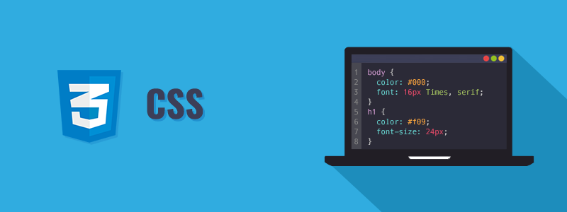
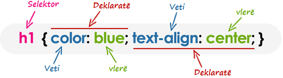

CSS – Njohuri themelore
CSS është teknologjia kryesore prezantuese që përdoret në krijimin Ueb Faqeve.

CSS është akronim nga Cascading Style Sheets. CSS është një gjuhë standarde për stilizim të faqeve që përdoret në përshkrim të prezantimit (d.m.th. paraqitjen dhe formatimin) e ueb faqeve.
Para CSS, gati të gjitha atributet prezantuese të dokumenteve HTML ishin të përmbajtura brenda kodit HTML (specifikisht brenda etiketave HTML); të gjitha ngjyrat e shkronjave, stilet e sfondit, radhitjet e elementeve, kufijtë dhe madhësitë duhej të përshkruheshin qartë në HTML.
Si rezultat, zhvillimi i ueb sajteve të mëdha u bë një proces i vështirë dhe i shtrenjtë, pasi stilizimi duhet shtuar duke u përsëritur në çdo ueb faqe individuale të ueb sajit.
Për të zgjidhur këtë problem, CSS u prezantua në vitin 1996 nga World Wide Web Consortium (W3C), i cili gjithashtu mirëmban standardin e tij. CSS u krijua për të mundësuar ndarjen e prezantimit (stilizimit) dhe përmbajtjes. Tani ueb dizajnerët mund të zhvendosin informacionin e formatimit të ueb faqeve në një fajll stilizimi të veçantë e që rezulton me fajlla më të thjeshtë të HTML-së dhe mirëmbajtje më të mirë.
CSS3 është versioni më i fundit i specifikimeve CSS. CSS3 shton disa veçori të reja në stilizim dhe mundëson avancim të përmirësuar në prezantimet e ueb faqeve.
Shënim: Këto mësime për CSS do t'ju ndihmojë të mësoni bazat e gjuhës më të fundit të CSS3, nga temat më elementare deri tek ato të avancuara hap pas hapi.
Çfarë mund të bëni me CSS?
Ka shumë gjëra që mund të bëni me CSS.
- Mund të zbatoni me lehtësi stilizim të njëjtë në disa elemente.
- Mund të kontrolloni prezantimin e shumë ueb faqeve të një ueb sajti me një fajll të vetëm të stilizimit.
- Mund ta paraqisni të njëjtën faqe ndryshe në pajisje të ndryshme.
- Mund të stilizoni gjendje dinamike të elementeve të tilla si hover, fokus, etj. E që nuk është e mundur ndryshe.
- Mund të ndryshoni pozicionin e një elementi në një ueb faqe pa e ndryshuar shënimin.
- Mund të ndryshoni shfaqjen e elementeve ekzistuese në HTML.
- Mund të transformoni elemente si shkalla, rrotullimi, pjerrtësimi, etj. në hapësirën 2D ose 3D.
- Mund të krijoni efekte animacioni dhe tranzicioni pa e përdorur JavaScript-in.
- Mund të krijoni një version për shtypje të ueb faqeve.
Lista nuk përfundon këtu, ka shumë gjëra të tjera interesante që mund të bëni me CSS.
Përparësitë e përdorimit të CSS-së
Përparësia më e madhe e CSS-së është se lejon ndarjen e stilit dhe paraqitjes nga përmbajtja e dokumentit. Këtu kemi dhënë edhe disa përparësi tjera:
- CSS kursen shumë kohë – CSS jep shumë fleksibilitet për të vendosur vetitë e stilit të një elementi. Mund të shkruani CSS-në një herë; dhe pastaj i njëjti kod mund të zbatohet në grupet të elementeve HTML, e gjithashtu mund të ripërdoret në shumë faqe HTML.
- Mirëmbajtje e thjeshtë – CSS ofron një mjet të thjeshtë për të përditësuar formatimin e dokumenteve dhe për të ruajtur qëndrueshmërinë në shumë dokumente. Për shkak se përmbajtja e tërësisë së ueb faqeve mund të kontrollohet lehtësisht duke përdorur një ose më shumë fajlla për stilzim.
- Faqet lexohen më shpejtë – CSS i mundëson disa faqeve për të ndarë informacionin e formatimit, e që zvogëlon kompleksitetin dhe përsëritjen në përmbajtjen strukturale të dokumenteve. Gjithashtu ndjeshëm zvogëlon madhësinë e transferimit të fajllit, e që rezulton në një lexim më të shpejtë të faqes.
- Stilet më superiore në HTML – CSS ka aftësi prezantuese shumë më të mëdha se HTML dhe siguron kontroll shumë më të mirë të paraqitjes së ueb faqeve. Kësisoj mund t'i jepni një pamje shumë më të mirë ueb faqeve në krahasim me elementet dhe atributet prezantuese të HTML-së.
Përputhshmëri në pajisje të ndryshme – CSS lejon gjithashtu që ueb faqet të optimizohen për më shumë se një lloj pajisjeje ose media. Përdorimi i CSS-it në të njëjtin dokument HTML mund të paraqitet në stile të ndryshme shikimi për pajisje (ekrane) si desktop, telefona inteligjentë, etj.
Këshillë: Tani shumica e atributeve HTML po zhvlerësohen dhe nuk rekomandohet të përdoren. Prandaj është një ide e mirë të përdorni sa më shumë CSS për të rritur përshtatshmërinë e ueb sajtit dhe t'i bëni ato të përputhshme me shfletuesit e ardhshëm.
Hyrje në CSS
Në këtë kaptinë do të mësoni se sa e lehtë është të shtoni informacione për stilin dhe formatimin në ueb faqe duke përdorur CSS. Por, para se të filloni, duhet të keni disa njohuri për HTML.
Përfshirja e CSS-it në dokumentet HTML
CSS mund të bashkëngjitet si një dokument i veçantë ose i shënuar në vetë dokumentin HTML. Ekzistojnë tri metoda për të përfshirë CSS-në në një dokument HTML:
- Stilet inline – Përdorimi i atributit style në etiketën fillestare HTML.
- Stilet e brendshme – Përdorimi i elementit
<style>në pjesën kryesore të dokumentit HTML. - Stilet e jashtëm – Përdorimi i elementit
<link>, për tu lidhur me një fajll të jashtëm CSS.
Shënim: Stilet inline kanë përparësinë më të lartë, dhe stilet e jashtëm kanë më të ultën. Do të thotë nëse specifikoni stilet për një element si në stilin e brendshëm ashtu edhe në atë të stilit të jashtëm, sipas rregullit stili i brendshëm do të mbizotëroj stilin e jashtëm.
Stilet inline
Stilet inline përdoren për të zbatuar rregullat e stilit unik në një element duke vendosur rregullat CSS direkt në etiketën fillestare. Mund t'i bashkëngjitet një elementi duke përdorur atributin style.
Atributi style përfshin një varg të çifteve të vetive dhe vlerave të CSS-it. Çdo palë "veti: vlerë" ndahet me nga një pikëpresje (;), ashtu si do të shkruani në stilin e brendshëm ose të jashtëm, por duhet të jetë e gjitha në një rresht, kësisoj:
Shembull:
<h1 style="color:red; font-size:30px;">Ky është titulli</h1>
<p style="color:green; font-size:22px;">Ky është një paragraf.</p>
<div style="color:blue; font-size:14px;">Kjo është një përmbajtje tekstuale.</div>Përdorimi i stileve inline zakonisht konsiderohet si praktikë jo e mirë. Meqenëse stilet futen direkt brenda etiketës HTML, kjo bën që prezantimi të përzihet me përmbajtjen e dokumentit; gjë që e bën kodin e vështirë për tu mirëmbajtur dhe e mohon qëllimin e përdorimit të CSS-së.
Shënim: Tek stilizimi inline është e pamundur stilizimi i pseudo-elemente dhe pseudo-klasave. Prandaj, duhet të shmangni përdorimin e atributeve të stilit në kodin tuaj. Përdorimi i fajllit për stilizim të jashtëm është mënyra e preferuar për të shtuar stile në dokumentet HTML.
Stilet e brendshme
Stilet e brendshëm zbatohen vetëm në dokumentin në të cilin janë shënuara.
Stili i brendshëm definohet në seksionin <head> të dokumentit HTML duke përdorur elementin <style>. Mund të definoni më shumë se një herë elementet <style> në dokument HTML, por ato duhet të shfaqen midis etiketave <head> dhe </head>.
Shembull:
<!DOCTYPE html>
<html lang="sq">
<head>
<title>Dokumenti HTML</title>
<style>
body { background-color: YellowGreen; }
p { color: #fff; }
</style>
</head>
<body>
<h1>Ky është titulli</h1>
<p>Ky është një paragraf tekstual.</p>
</body>
</html>Këshillë: Tipi i atributit të etiketave <style> dhe <link> (d.m.th. type="text/css") definon gjuhën e stilizimit. Ky atribut është thjesht informues. Mund ta hiqni këtë pasi CSS është gjuhë standarde dhe e paracaktuar e stilizimit në HTML5.
Stilet e jashtëm
Një stil i jashtëm është ideal kur stili zbatohet në shumë faqe të ueb sajtit.
Një fajll me stil të jashtëm mban të gjitha rregullat e stilit në një dokument të veçantë që mund ta lidhni nga çdo dokument HTML në faqen tuaj. Stilet e jashtëm janë më fleksibël, sepse nga një fajll i vetëm, mund të ndryshoni pamjen e tërë ueb sajtit.
Mund të bashkëngjitni fajllat e stilit të jashtëm në dy mënyra – lidhja dhe importimi.
Lidhja e stilit të jashtëm
Para krijimit të lidhjes, duhet së pari të krijojmë një fajll stilizimi. Hapim editorin tuaj të preferuar të kodit dhe krijojmë një fajll të ri. Tani shtypim kodin e mëposhtëm CSS brenda këtij fajlli dhe ruajmë atë si "stili.css".
Shembull:
body {
background: lightyellow;
font: 18px Arial, sans-serif;
}
h1 {
color: orange;
}Një fajll me stil të jashtëm mund të lidhet me një dokument HTML duke përdorur etiketën <link>. Etiketa <link> hyn brenda seksionit <head>, siç mund ta shihni në shembullin vijues:
Shembull:
<!DOCTYPE html>
<html lang="sq">
<head>
<title>Dokumenti HTML</title>
<link rel="stylesheet" href="css/stili.css">
</head>
<body>
<h1>Ky është titulli</h1>
<p>Ky është një paragraf tekstual.</p>
</body>
</html>Këshillë: Nga tri metodat, përdorimi i stilit të jashtëm është metoda më e mirë për definimin dhe zbatimin e stileve në dokumentet HTML. Siç mund ta shihni qartë me stil të jashtëm, fajlli HTML që lidh fajllin e jashtëm CSS kërkon ndryshime minimale në shënjim.
Importimi i stilit të jashtëm
Rregulli @import është një mënyrë tjetër për të ngarkuar një stil të jashtëm. Deklarata @import udhëzon shfletuesin të ngarkojë një stil të jashtëm dhe të përdorë stilet e saj.
Mund ta përdorni në dy mënyra. Më e thjeshtë është brenda seksionit head të dokumentit tuaj. Vini re se, rregulla tjera të CSS-së mund të përfshihen akoma në elementin <style>.
Shembull:
<style>
@import url("css/stili.css");
p {
color: blue;
font-size: 16px;
}
</style>Ngjashëm, mund të përdorni rregullin @import për të importuar një stil brenda një stili tjetër.
Shembull:
@import url("css/modeli.css");
@import url("css/ngjyra.css");
body {
color: blue;
font-size: 14px;
}Shënim: Të gjithë rregullat @import duhet të vendosen në fillim të fletës së stilit. Çdo rregull stili i definuar në stilin e dhënë mbizotëron rregullat kundërshtuese nga stilet e importuar. Sidoqoftë, importimi i një stili brenda një stili tjetër nuk rekomandohet për shkak të çështjes së performancës.
Sintaksa CSS
Një fletë stilesh e CSS-së përbëhet nga një grup rregullash që interpretohen nga ueb shfletuesi dhe më pas aplikohen në elementet përkatëse si paragrafët, titujt, etj.
Rregulli i CSS-së ka dy pjesë kryesore, një selektor dhe një ose më shumë deklarata:

Selektori specifikon se në cilin element ose në cilat elemente në faqen HTML zbatohet rregulli CSS.
Deklaratat brenda bllokut përcaktojnë mënyrën e formatimit të elementeve në një ueb faqe. Secila deklaratë përbëhet nga një veti dhe një vlerë e ndarë nga dy pika (:) dhe që mbaron me pikëpresje (;), e grupet e deklarimit janë të vendosura nga kllapat e mëdha {}.
Vetia është atribut i stilit që dëshironi ta ndryshoni; ato mund të jenë fonte, ngjyra, sfonde, etj. Çdo veti ka një vlerë, për shembull vetia e ngjyrës mund të ketë vlerën blue ose #0000FF, etj.
h1 {color:blue; text-align:center;}Për ta bërë CSS-në më të lexueshme, çdo deklaratë mund ta shënoni në rresht të ri, kësisoj:
Shembull:
h1 {
color: blue;
text-align: center;
}Në shembullin e mësipërm h1 është selektor, color dhe test-align janë veti të CSS-së, pastaj blue dhe center janë vlerat përkatëse të këtyre vetive.
Shënim: Një deklaratë CSS gjithmonë përfundon me një pikëpresje ";", dhe grupet e deklarimit janë gjithmonë brenda kllapave gjarpërore "{}".
Shënimi i komenteve në CSS
Komentet zakonisht shtohen me qëllim që ta bëjnë kodin burimor më të lehtë për t'u kuptuar. Mund t’i ndihmojë zhvilluesit tjetër (ose juve në të ardhmen kur editoni kodin burimor) të kuptojnë se çfarë po përpiqeshit të bënit me CSS. Komentet janë domethënëse për programuesit, por injorohen nga shfletuesit.
Një koment në CSS fillon me /* dhe përfundon me */, siç tregohet në shembullin më poshtë:
Shembull:
/* Ky është një koment në CSS */
h1 {
color: blue;
text-align: center;
}
/* Ky është koment CSS i gjatë
në shumë rreshta */
p {
font-size: 18px;
text-transform: uppercase;
}Gjithashtu mund të komentoni një pjesë të kodit tuaj CSS për qëllime korrigjimi, siç tregohet më poshtë:
Shembull:
h1 {
color: blue;
text-align: center;
}
/*
p {
font-size: 18px;
text-transform: uppercase;
}
*/Ndjeshmëria e shkronjave në CSS (Case Sensivity)
Emrat e vetive në CSS dhe shumë vlera nuk janë të ndjeshme në shkronja të mëdha. Ndërsa, selektorët e CSS-së zakonisht janë të ndjeshëm në shkronja, për shembull, selektori i klasës .maincontent nuk është i njëjtë me .mainContent.
Prandaj, për të qenë më të sigurt, duhet të supozoni se të gjithë komponentet e rregullave të CSS janë të ndjeshëm ndaj shkronjave.
Selektorët
Selektori CSS është një model që përputhet me elementet e një ueb faqeje. Rregullat e stilit të shoqëruara me atë selektor do të aplikohen në elementet që përputhen me modelin e selektorit.
Selektorët janë një prej aspekteve më të rëndësishme të CSS-së, pasi ato ju mundësojnë të përzgjidhni elemente specifike në ueb faqen tuaj që të stilizohen në mënyra të ndryshme.
Disa lloje të selektorëve CSS janë në dispozicion, le t'i hedhim një vështrim:
Selektori universal
Selektori universal, i shënuar me një yll (*), përputhet me çdo element në ueb faqe.
Selektori universal mund të hiqet nëse ekzistojnë kushte të tjera në element. Ky selektor shpesh përdoret për të hequr margjinat dhe mbushjet e paracaktuara nga elementët me qëllim të testimit të shpejtë.
Shembull:
* {
margin: 0;
padding: 0;
}Rregullat e stilit brenda selektorit * do të zbatohen për çdo element në një dokument.
Shënim: Rekomandohet të mos përdorni selektorin universal (*) shumë shpesh në një mjedis paraqitjeje, pasi që ky selektor përputhet me çdo element në ueb faqe e që ushtron presion të panevojshëm në shfletues. Në vend të tij përdorni selektor të tipit element ose selektor të klasës.
Selektorët e tipit të elementit
Një selektor i tipit të elementit përputhet me të gjitha instancat e elementit në dokument me emrin e tipit përkatës të elementit. Të provojmë një shembull për të parë se si funksionon në të vërtetë:
Shembull:
p {
color: blue;
}Rregullat e stilit brenda selektorit p do të zbatohen në çdo element <p> (apo paragraf) në dokument dhe e ngjyrosin atë me ngjyrë të kaltër (blue), pavarësisht nga pozicioni i tyre në pemën e dokumentit.
Selektorët ID
Selektori ID përdoret për të definuar rregullat e stilit për një element të vetëm ose unik.
Selektori ID definohet me shenjën (#), e më pas e ndjekur nga vlera e ID-së.
Shembull:
#error {
color: red;
}Ky stil e paraqet tekstin e një elementi me të kuqe, atributi id i të cilit e ka vlerën error.
Shënim: Vlera e një atributi ID duhet të jetë unike brenda një dokumenti të caktuar – që do të thotë se dy elementë në dokumentin HTML nuk mund të kenë të njëjtën vlerë të ID-së.
Selektorët e klasave
Selektorët e klasave mund të përdoren për të zgjedhur çdo element HTML që kanë atributin class. Të gjithë elementët që kanë atë klasë do të formatohen sipas rregullit të përcaktuar.
Selektori i klasës definohet me shenjën (.), e më pas e ndjekur nga vlera e klasës.
Shembull:
.kalter {
color: blue;
}Rregullat e stilit të mësipërm e bëjnë tekstin me ngjyrë të kaltër për çdo element në dokument që posedon atributin class me vlerë blue. Mund ta bëni atë më të veçantë. Për shembull:
Shembull:
p.kalter {
color: blue;
}Stili brenda selektorit p.blue e bën tekstin e kaltër vetëm për elementet <p> që kanë atributin class me vlerën blue dhe nuk ka asnjë efekt në paragrafët e tjerë.
Selektorët pasardhës
Mund t'i përdorni këto selektorë kur duhet të zgjidhni një element që është pasardhës i një elementi tjetër, për shembull, nëse doni të përzgjidhni vetëm ato etiketa a që përmbahen në një listë të parenditur ul, në vend që të përzgjidhni të gjithë elementët a në atë dokument.
Shembull:
ul.menu li a {
text-decoration: none;
}
h1 em {
color: green;
}Rregullat e stilit brenda selektorit ul.menu li a zbatohen vetëm për ato elemente <a> që gjinden brenda një elementi <ul> që ka klasën .menu, dhe nuk ka asnjë efekt në linqet tjerë brenda dokumentit.
Në mënyrë të ngjashme, rregullat e stilit brenda selektorit h1 em do të zbatohen vetëm për ato elemente <em> që përmbahen brenda elementit <h1> dhe nuk ka efekt në elementët e tjerë <em>.
Selektorët e fëmijëve
Selektorët e fëmijëve përdoren për të zgjedhur vetëm ato elemente që janë fëmijët e drejtpërdrejtë të një elementi.
Selektorët e fëmijëve përbëhet nga dy ose më shumë selektorë të ndarë me simbolin më i madh se (>). Mund ta përdorni këtë selektor, për shembull, për të zgjedhur nivelin e parë të elementeve të listës brenda një liste të futur që ka më shumë se një nivel. Le të shikojmë një shembull për të kuptuar se si funksionon:
Shembull:
ul > li {
list-style: square;
}
ul > li ol {
list-style: none;
}Rregulli i stilit brenda selektorit ul > li zbatohet vetëm për ato elementë <li> që janë fëmijë të drejtpërdrejtë të elementeve <ul> dhe nuk ka asnjë efekt mbi elementët e tjerë të listës.
Selektorët fqinjë sibling
Selektorët fqinjë sibling mund të përdoren për të zgjedhur elementë në të njëjtin nivel. Ky selektor ka sintaksën kësisoj: E1 + E2, ku E2 është shënjestra e selektorit.
Selektori h1 + p në shembullin vijues do të zgjedhë elementet <p> vetëm nëse të dy elementet <h1> dhe <p> ndajnë të njëjtin prind në pemën e dokumentit dhe <h1> i paraprin dhe është fqinj me elementin <p>. Kjo do të thotë se vetëm ata paragrafë që vijnë menjëherë pas çdo titulli <h1> do të përzgjidhen. Le të shohim se si funksionon në të vërtetë ky selektor:
Shembull:
h1 + p {
color: blue;
font-size: 18px;
}
ul.task + p {
color: #f0f;
text-indent: 30px;
}Selektorët e përgjithshëm sibling
Selektori i përgjithshëm sibling është i ngjashëm me selektorin fqinj sibling (E1 + E2), por është më pak i rreptë. Selektori i përgjithshëm sibling përbëhet nga dy selektorë të thjeshtë të ndarë nga karakteri (∼). Mund të shkruhet kësisoj: E1 ∼ E2, ku E2 është shënjestra e selektorit.
Selektori h1 ∼ p në shembullin më poshtë do të zgjedhë të gjithë elementët <p> që paraprihen nga elementi <h1>, ku të gjithë elementët ndajnë të njëjtin prind në pemën e dokumentit.
Shembull:
h1 ∼ p {
color: blue;
font-size: 18px;
}
ul.task ∼ p {
color: #f0f;
text-indent: 30px;
}Grupimi i selektorëve
Shpesh disa selektorë në një fletë të stilit ndajnë të njëjtat deklarata të rregullave të stilit. Mund t'i gruponi në një listë të ndarë me presje për të minimizuar kodin në fletën tuaj të stilit. Gjithashtu ju pamundëson të përsërisni të njëjtat rregulla të stilit disa herë:
Shembull:
h1 {
font-size: 36px;
font-weight: normal;
}
h2 {
font-size: 28px;
font-weight: normal;
}
h3 {
font-size: 22px;
font-weight: normal;
}Siç mund ta shihni në shembullin e mësipërm, i njëjti rregull i stilit font-weight: normal; përdoret nga selektorët h1, h2 dhe h3, kështu që mund të grupohen në një listë të ndarë me presje, kësisoj:
Shembull:
h1, h2, h3 {
font-weight: normal;
}
h1 {
font-size: 36px;
}
h2 {
font-size: 28px;
}
h3 {
font-size: 22px;
}